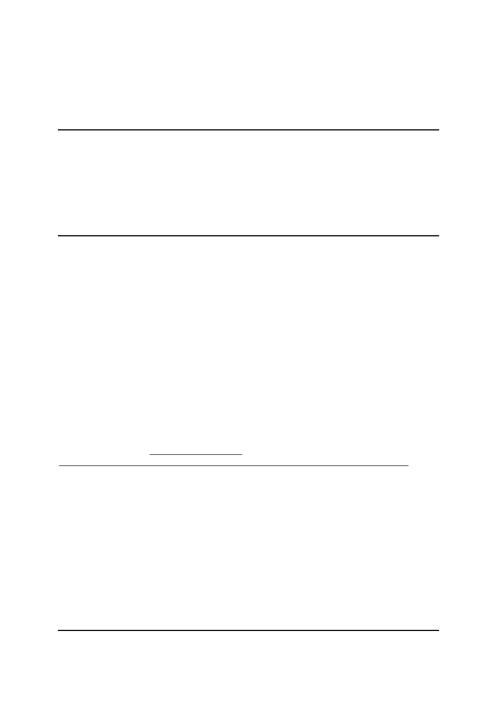

OpenTC Newsletter
October 2007
From the Open Trusted Computing (OpenTC) research project, sponsored by the
European Union.
In this issue:
- Editorial: Analysing the OpenTC hypervisor
- OpenTC work on Software Analysis – an introduction to a series of articles
- Static analysis using Abstract Interpretation
- Conference Announcement: TRUST2008, 11th–12th March 2008 in Villach, Austria
- OpenTC publications available
Editorial: Analysing the OpenTC hypervisor
By: Arnd Weber, ITAS, Forschungszentrum Karlsruhe, Germany
Dear reader,
The bulk of this newsletter addresses quality issues of the code which is used or produced by
the OpenTC project. Like many EU-supported research projects, OpenTC is divided into
work packages. Whilst most of them are devoted to building parts of the platform, one work
package is specifically concerned with analysing source code and software components. This
is a key task in assessing aspects of trustworthiness of the OpenTC platform. Members of this
work package will describe their activities in a number of newsletter articles, starting in this
issue.
First, Armand Puccetti from CEA-LIST, France, gives an overview of the work package, its
goals and its challenges. Pascal Cuoq, also from CEA-LIST, will then introduce static
software analysis, one of the methods used by OpenTC. For a general overview of the project,
the reader can refer to
http://www.opentc.net/
and in particular to
http://www.opentc.net/index.php?option=com_content&task=view&id=13&Itemid=28
.
The newsletter also includes an announcement by the OpenTC project co-ordinator Technikon
for the “TRUST2008” conference in Villach, Austria, including a “Call for Papers” and an
overview of events associated with the conference, namely, the “Spring School” on Trusted
Computing, the “Austrian IT Forum” and meetings of related EU research projects.
As in the last issue, we close with an announcement of new research papers produced by
members of the OpenTC consortium.
Contact: arnd.weber at itas.fzk.de
With thanks to Richard Brown, Dirk Kuhlmann, and Stephane Lo Presti for having
participated in preparing this issue.

OpenTC work on Software Analysis – an introduction to a series of articles
By: Armand Puccetti, Commissariat à l'Energie Atomique (CEA-LIST), Paris, France
In OpenTC, the project work package 07 (WP07) is concerned with providing methods,
techniques and tools to analyze binaries and source code of the OpenTC Linux-based secure
operating system which includes a hypervisor for running guest operating systems. As in most
engineering disciplines, software development requires the ability to “measure” the final
software product to ensure a high degree of quality and reliability. The term “measure” must
be taken in the broad sense, and designates all activities involving software analysis,
methodology preparation, testing, verification, and certification. Analyzing a software product
requires some knowledge of its “manufacturing” process, including the development tools, its
by-products (intermediate products created along the path to the main product), its
requirements and the constraints posed by the final user.
As Trusted Operating Systems are on the way to becoming critical components of any
computing platform, their security must be supported by measures and controls that are
reproducible and can serve as arguments in a later certification process. As is already the case
for embedded safety-critical systems, critical software components must be accompanied by a
certificate to ensure that they conform to a given standard. Certification, such as Common
Criteria [CC], similarly involves gathering information on the entire development process,
including management, version control, etc., as well as by-products and their support
techniques.
In order to measure such critical software, WP07 provides several tools to perform
measurements in order to characterize and, where necessary, improve the software. Verifying
whether software is fit-for-purpose is a very complex task, because of its inherent complexity,
its hand-crafted nature and many informal requirements imposed on it. The most abstract
requirement of “being trusted” has no single universal measure, being an ephemeral and
human-related property. However, security decomposes into finer properties, such as
integrity, confidentiality, authentication, etc., some of which can be measured or evaluated.
The latter can be done by executing given binary code, by simulating its execution, or by the
symbolic evaluation of a higher-level representation of the code. Another key aspect of
security is conformance, meaning that a product does precisely what it is intended to do as
described in its specifications. It should be pointed out that the WP07 tools are not specific to
OS applications, as they are already used for real-time safety- or mission-critical applications,
e.g. in the aeronautics and nuclear domains.
Following this approach, OpenTC aims to increase the security of the Linux operating system.
The objective is not to create an entirely new OS from scratch, but to enhance the existing
Linux OS with the addition and integration of new security components following a bottom-
up approach through the various layers: TPM, secure BIOS, drivers, virtualization layers,
hypervisors, security management functionalities and trusted applications. To ensure the
security of such a platform, all layers must be secure and cooperate together in an appropriate
manner.
OpenTC WP07 focuses on the new intermediate layers placed in between the TPM and the
guest OS. Parts of the XEN and L4 hypervisors and the TPM software stack are analyzed by
WP07, in order to demonstrate the feasibility of the approach on large code bases. This can
then be extended allowing us to envisage a thorough measurement of certain OS layers once
OpenTC has ended (assuming adequate resources). Whatever direction might be taken after
OpenTC's completion, it is important to secure layers that reside on top of existing layers that
have already been secured. Eventually, the hardware layers must be measured too, using
different techniques than those applied to software, sometimes specific to VHDL or SystemC
designs. A bumpy road lies ahead regarding the measurement of higher level layers of a Linux
OS, at least in its current form, mainly because of its production process.
If there is a demand for OS certification (such as CC EAL5 and above), particularly from
national authorities, then the key analysis technologies will be ready. However, they are likely
to require extra work from the OS developers, who would have to respect defined
development process requirements imposed by automated and semi-automated code
verification tools, for instance by producing only code that is analyzable. A reasonable target
might be the certification of some precise version of the Linux kernel and some well-defined
applications. On the other hand, an entire Linux distribution would not be a reasonable target
for certification. Evaluating MS Windows is out of the scope of OpenTC, but Microsoft
performs measurements using similar tools, such as SLAM [SLAM].
In a series of articles that starts in this edition of the OpenTC newsletter, WP07 team
members will provide some insight into the key techniques developed in WP07, their
theoretical and practical foundations and how they are applied to open-source OS. Among the
topics we plan to discuss are security testing of the Trusted Software Stack (TSS), testing
methodology, notions of abstract interpretation and verification of the XEN virtualization
layer.
References:
- [CC] ISO/IEC 15408: Common Criteria published by ISO/IEC JTC1/SC27, 1999.
- [SLAM] Static analysis toolset. Microsoft.
http://research.microsoft.com/slam/?0sr=a
About the author: Armand Puccetti works at the Software Safety Laboratory of CEA-LIST.
He works on formal methods for software and hardware, semantics of programming
languages, compilers and event-based simulation techniques.
Contact: armand.puccetti at cea.fr
Static analysis using Abstract Interpretation
By: Pascal Cuoq, Commissariat à l'Energie Atomique (CEA-LIST), Paris, France
There are two main families of techniques used to gain confidence in a piece of software. One
family is concerned with testing techniques, where the software is tried against as many
different input configurations as possible, in order to detect as many problems as possible. A
broad level of testing increases the confidence that a bug would have been found if there was
one. With testing techniques, confidence increases slowly with the number of test cases, but it
can never reach 100% unless the number of possible inputs for the program is small enough
for exhaustive testing.
The other family of techniques is called “static analysis”. In contrast to testing, it is
theoretically possible to reach a point of analysis where the intended goal has been satisfied.
An example of a goal can be “the system does not make an illegal memory access (blue
screen in Windows)”.

The objective to be verified via static analysis can be more or less ambitious: examples of
low-level objectives are to guarantee the absence of type errors at execution time or to prevent
illegal pointer access. A higher-level objective would be to guarantee the impossibility of
intrusions on a computer system, and a plan to achieve this objective may rely on the former,
lower-level objectives.
For both static analysis and testing, it is necessary to refer to a formal specification of the
piece of software. This can be a problem because formal specifications of the code generally
aren't available. For this reason, both static analysis and testing often focus on ascertaining
that a certain class of run-time errors does not occur, because the absence of such errors is
generally an implicit specification for the program under analysis, and indeed the only kind of
formal specification available.
Although it is theoretically possible to become 100% confident about the satisfaction of a
property with static analysis, this point cannot always be reached in practice, and even when it
is, the process is not always fully automatic. In fact, the existence of an analyser which, for
any given program, is able to tell accurately if this program will fail is a mathematical
impossibility. Trying to build one would be like searching for a pair of odd numbers whose
sum is not even: it is possible to spend a lifetime trying if one does not realise that they
simply don’t exist. An analyser can aim at never accepting a program that fails when
executed, or it can aim at never rejecting a program that does not fail when executed.
However, it cannot aim at both these objectives simultaneously, because achieving both is
precisely what is mathematically impossible. In the context of software certification, it is
common to use analysers of the first category, so that when the program successfully passes
analysis, it can be trusted not to fail during execution. The drawback of analysers of this
category, however, is that they may produce “false alarms”: a program might be rejected
because it includes a part that looks like a bug, but in reality is not. Determining which
warnings are false alarms involves manual intervention from the verifier, and this is where
certification becomes costly.
An introduction to the topic of static analysis typically starts with an outline of type-checking,
a topic every developer is familiar with. It has a property that is more or less unique among
static analyses: a loop can be type-checked by type-checking its body only once. Since many
programmers use the C programming language, we will consider an example written in C:
1 void f(int); // we assume that f has no visible side-effects
2
3 int main(int y)
4 {
5 int x = y + 10;
6 while (x >= 2)
7 {
8 f (100 / x);
9 x--;
10 }
11 return x;
12 }
Type-checking a program can be seen as obtaining properties that hold for a wide class of
inputs (for instance, for any input of type "int") in a single run. This "run" terminates because
it manipulates "values" (types) that are very simple (for instance, the variable "y" is an “int”

because it is declared so, and the addition of the two "int"s 10 and "y" is an "int", which
agrees with the type declared for "x"). Unlike what happens when executing the program in
the usual sense, there is no need to iterate any part of the program. For instance, it can be seen
that the "while" loop is well-typed, because the condition of the "while" loop is an "int" as it
should be, and the body of the loop is well typed, in a single pass.
In our example, type-checking guarantees that the program does not fail because of a type
error, as long as the input is an "int", without requiring to test all the possible 2^32 or 2^64
inputs. However, the convenient aspect of type-checking in static analysis (a verified property
that holds for a whole range of possible inputs) comes at the cost of a major drawback,
namely, the weakness of the property that is verified. Type-checking only guarantees the
absence of type errors at run-time (for instance, the program never divides by a pointer at line
8), and nothing more.
Let us now try to generalise the previous "run the program with types as values" approach, for
instance by using intervals where we previously used just types, in order to detect other kinds
of run-time errors. We are still aiming for correctness, that is, never accepting a program that
may generate an error at execution. To this end, we will always compute over-approximations
of the sets of possible values of each variable at each statement. That is, the interval we
compute for a variable at a given statement must contain every value this variable can take at
this statement. The interval we compute is an approximation, but only because it is allowed to
contain some values that do not actually occur at any time for any input. Making sure that our
intervals, although approximated, contain all the values that can occur during an actual
execution is the way to obtain correctness. Indeed, if at a given statement some variable x is
used as a divisor, and we have determined that all the possible values for x were included in
an interval that does not contain zero, we can safely conclude that this division never
produces a division-by-zero error.
Let us assume that, in the previous example, the inputs of function main(), that is, the values y
may assume, are expected to be in the range [0..1000]. When we try to "run" it using intervals
as values, we naturally obtain [10..1010] as the value for x at line 5. We are now able to
discover that under the given expectation, the loop is always executed at least once (the loop
condition is true the first time it is checked), and that, on the first execution of line 8, x can
not be zero. While type-checking only guaranteed that the program did not divide by a
pointer, we are now in able to guarantee that it does not divide by zero either. This is a much
stronger property, although for now, we have only verified it held for the first execution of
line 8.
After executing line 9, the "value" of x is [9..1009], and the next statement to consider is
again the condition for the while loop. At this point, interval analysis is different from type-
checking: types were general enough to require just a single pass for the body of the loop,
whereas we are now performing an interval analysis. At this point, the body of the loop has
been checked once for the values of x in [10..1010], but unfortunately the interval we have for
x now, i.e. [9..1009] is not included in the interval we used the first time! We know that there
will not be a division by zero during the first run of the body of the while loop, but this does
not allow us to conclude that there will be no division by zero on the second run. If we are to
provide any answer to this question at all, it seems that we need to execute the body of the
while loop again, this time with the "value" [9..1009] for x. Since we would like to run the
body of the loop a minimum number of times before reaching a conclusion, a better idea is to
propagate the union of the interval we had the first time ([10..1010]) and the interval we have
now ([9..1009]). This union, i.e. the interval [9..1010], is larger, improving the chances that

the values we find on the next run are included.
On the second run of the body, we find that the program is again free of division-by-zero
errors. However, the execution now reaches the loop condition with an interval of [8..1009]
for x. This interval is not included in any interval we have checked so far, so, again, we can
not be certain that the loop is safe from division-by-zero errors with these values for x.
It should be clear by now that, even though we are using intervals instead of values, the "runs"
are not general enough to save us from executing the loop body as many times as an actual
program execution might do, or even more.
But what exactly were we hoping for? We were hoping that the possible values for variable x
at the end of the body of the loop would be included in the set of values that have already
been checked during the earlier passes. In this case, an inductive reasoning would allow us to
safely conclude that there is no division by zero problem during any pass of a real execution.
Such an interval for x would be called a fixpoint of the loop.
At this point, the framework of abstract interpretation, building upon what was known as
dataflow analysis, provides a solution to our problem (as well as other results of a more
theoretical nature). Techniques called widening and narrowing allow us to take guesses at
what interval for x may have a chance to be a fixpoint. Widening in particular allows us to
find a fixpoint in a smaller number of steps than would be necessary using the naive iterative
method. This comes at the cost of obtaining a fixpoint that is not necessarily the smallest one.
In our example, we see how the lower bound of the interval for x decreases on each new run
of the body of the while loop. Widening would lead us to jump ahead and try for x an interval
with the same upper bound (i.e. 1010) and a smaller lower bound, maybe the interval
[0..1010]. Narrowing would then make an additional run starting with this interval and
suggest reducing the interval to [1..1010], seeing how the condition of the while loop reduces
the possible values for x to this interval after the additional run.
In conclusion, the combination of these techniques would lead us to try the interval [1..1010]
for variable x before the loop, leading to the evaluation of the condition splitting it into a
[1..1] interval after the loop (this is the sub-interval of [1..1010] that leads to exiting the loop),
and a [2..1010] sub-interval just before the call to f. We can conclude from this propagation of
the interval [1..1010] that it certainly does not lead to a division-by-zero for the first run of the
body of the while loop that follows.
If we now continue the propagation, the interval after decrementing x becomes [1..1009]. This
interval, which represents the values of x possibly enabling the loop again, is indeed included
in the interval that was just being checked [1..1010]. Thus the interval [1..1010] is a fixpoint
for the loop, and this in turns means that the analysis is finished: for all the possible initial
values for x within [0..1000], we now know that the value of x just before evaluating the
condition of the loop will be within [1..1010], that the function will never divide by zero, and
that if it returns, the return value will be 1.
In the next OpenTC newsletter, the second part of this article will show some of the problems
we run into if we apply the approach of abstract interpretation to programs much larger than
the previous 12-line example.
About the author: Pascal Cuoq has been playing with computers since he was 6. He is
currently doing so at CEA-LIST, within the Software Safety Laboratory, where he is one of
the architects of an assistance tool to improve confidence in critical C code.
Contact: pascal.cuoq at cea.fr
Conference Announcement: TRUST2008, 11th–12th March 2008 in Villach, Austria
In recent decades, increasingly powerful yet affordable IT systems have fundamentally
changed the way we work, live, and communicate. Unfortunately, a significant number of
presumably secure IT systems turn out to exhibit unforeseen security and functionality
deficiencies and weaknesses. Severe vulnerabilities are discovered with every successful
attack, be it through Trojan horses, viruses, phishing, or pharming. Many attacks exploit
vulnerabilities of existing computing platforms and IT infrastructures with monolithic
operating systems. In this field, improved systems and techniques have to be developed and
deployed to ensure the security and trustworthiness of IT systems.
Of particular concern is the sophistication level of recent attacks which suggests a constant
increase in activities to professionally break IT systems. These attacks have the potential of
causing economical loss on a large scale and can endanger critical infrastructures – with
disastrous consequences for information societies. We therefore have to reconsider the
security and trustworthiness of IT systems not only from a technical perspective, but also
from legal and economical angle. This will require collaborative efforts of the computer
industry, commercial and research.
TRUST2008 focuses on creating a joint scientific and networking event, covering the core
issues of Trust in IT Systems. TRUST2008 aims at contributing to the field of Trusted
Infrastructure and Computing, bridging between international research groups and projects.
The event offers all participants an opportunity to present cutting edge developments, to foster
the international knowledge exchange, and to catch up with the latest trends in science and
technology development. Speakers will address current challenges, applications and
opportunities for existing as well as emerging markets and products.
Call for Papers
We invite you to submit high quality research papers describing results or ongoing work.
Topics for submission include, but are not limited to the following aspects of Trust in IT
Systems:
-
Applications, use cases and case studies
-
Digital assets management
-
Hardware and Software based Trusted Computing
-
Integrity management
-
Legal notions of trust in computer science and engineering
-
Limitations of Trusted Computing
-
Attestation of computing devices
-
Cryptographic mechanisms in Trusted Computing
-
Trusted Embedded Computing
-
Models and principles for Trusted Computing
-
Identity management – Linkability and Privacy Issues
-
Privacy Preserving/Enhancing Technologies

-
Reputation Management
-
Security and trust management models architectures, mechanisms and policies in
distributed systems
-
Technologies for building trust in e-Business
-
Trusted Computing in networks and distributed systems
-
Trust management for data mining
-
Trust, Security and Privacy for Ubiquitous Computing
-
Virtualization and Trusted Computing
-
Secure Operating Systems
-
Secure Software Distribution
Papers must be submitted electronically in PDF format using the conference management
system available at the TRUST2008 website. Papers must be unpublished and not be
submitted elsewhere for publication. Papers may not exceed 10 pages (A4). Papers selected
will be published in the Springer Series “Lecture Notes in Computer Science”.
Dates:
Submission deadline: Dec. 15, 2007
Acceptance Notification: Jan. 31, 2008
Camera ready version due: Feb. 15, 2008
Keynote Speakers
Academics and industrial researchers with established reputation in relevant fields will
provide the scientific leadership for the conference and ensure a high technical standard. The
scientific leaders are Ahmad-Reza Sadeghi (Ruhr University Bochum, Germany) and Peter
Lipp (Graz University of Technology, Austria). Keynote speakers include:
- David Grawrock (Intel),
- Keith Baker (Philips),
- Martin Sadler (HP Labs),
- Ronald Perez (IBM Watson Research Center).
In addition, we have confirmed support for additional speakers from AMD, Infineon
Technologies and the European Commission.
EC project meetings
TRUST2008 will be also an occasion to get insight into various projects on trusted and secure
computing, as several project meetings and workshops will be held during the period March
10th–13th 2008. The following projects will gather their teams in the periphery of
TRUST2008:
-
FP6-IST OpenTC,
-
FP6-Medea+ TSC,
-
FP6-ITEA-2 TECOM,
-
FP7-ICT TECOM,
-
FP7-ICT CACE.
Please note that these project meetings are closed to the public. However, there will be
opportunities for meeting the project partners. For other projects wishing to arrange similar
meetings, support and infrastructure can be provided on advance request to the organizer,
Technikon Forschungsgesellschaft mbH.
Spring School TRUST 2008
The Spring School TRUST2008 will be held on 10th–13th March 2008 as a unique and
innovative addition to the TRUST2008 conference. Speakers and experts from different
projects will share a wide range of knowledge and expertise during seminars and courses.
Austrian IT Forum March 11th 2008
On March 11th 2008, Trust2008 offers the opportunity to participate in the Austrian IT
Forum. The Forum is lead by Karl Posch from Graz University of Technology and focuses on
Austrian Security research. Members from Austrian research organizations and companies
will present their work and research. The forum events include a panel discussion with
Austrian and international experts.
Further information on the TRUST2008 event can be found on the website:
http://www.TRUST2008.eu
Contact:
Karoline Oberlerchner
TECHNIKON Forschungsgesellschaft mbH
Richard-Wagner-Str. 7
A-9500 Villach, Austria
phone: +43 4242 233550
fax: +43 4242 23355-77
e-mail: TRUST2008@technikon.at
Recent OpenTC publications
- Balfe, S.; Gallery, E.; Mitchell, C.; Paterson, K.: Combating crimeware with trusted
computing. To be published in “Crimeware” (Addison-Wesley), edited by M. Jakobsson and
Z. Ramzan.
- Cabuk, S.; Dalton, Ch.; Ramasamy, H.; Schunter, M.: Towards Automated Provisioning of
Secure Virtualized Networks. To appear in the Proceedings of the 14th ACM Conference on
Computer and Communications Security (CCS). November, 2007 (available at
http://www.hpl.hp.com/techreports/2007/HPL-2007-139.html
)
- Eisenbarth, Th.; Güneysu, T.; Paar, Ch.; Sadeghi, A.-R.; Schellekens, D.; Wolf, M.:
Reconfigurable Trusted Computing in Hardware. To be presented at ACM STC workshop
(2nd ACM Workshop on Scalable Trusted Computing (STC 2007), Alexandria, Virginia,
USA, 2. November 2007)
- Gallery, E.; Mitchell, C.: Trusted mobile platforms. Presentation given at FOSAD '07,
International School on Foundations of Security Analysis and Design, Bertinoro, Italy,
September 2007.
- Gasmi, Y.; Sadeghi, A.-R.; Stewin, P.; Unger, M.; Asokan, N.: Beyond Secure Channels. To
be presented at STC 2007.
- Kühn, U.; Selhorst, M.; Stüble, Ch.: Realizing Property-Based Attestation and Sealing with
Commonly Available Hard- and Software. To be presented at STC 2007.
- Lo Presti, S.: A Tree of Trust rooted in Extended Trusted Computing. In: Proceedings of the
2nd conference on Advances in Computer Security and Forensics (ACSF), Liverpool John
Moores University, 12 - 13 July 2007 (available at
http://www.isg.rhul.ac.uk/~uqai221/ACSF2007.pdf
)
Edited by the Institute for Technology Assessment and Systems Analysis,
Forschungszentrum Karlsruhe, Germany, on behalf of the OpenTC research project
consortium, in co-operation with all partners.
Editor: Arnd Weber, Forschungszentrum Karlsruhe GmbH, ITAS, Hermann-von-Helmholtz-
Platz 1, D-76344 Eggenstein-Leopoldshafen, Telephone: + 49 7247 82 3737.
Contact: editor at opentc.net
Disclaimer: The views and opinions expressed in the articles do not necessarily reflect those
of the European Commission and the consortium or partners thereof. All articles are regarded
as personal statements of the authors and do not necessarily reflect those of the organisation
they work for.
The OpenTC-project is a research project supported by the European Commission, project
IST-027635. Its 23 partners are: Technikon Forschungs- und Planungsgesellschaft mbH
(project coordination, AT); Hewlett-Packard Ltd (technical leader, UK); AMD Saxony LLC
& Co. KG (DE); Budapest University of Technology and Economics (HU); Commissariat à
l’Energie Atomique – LIST (FR); COMNEON GmbH (DE); Forschungszentrum Karlsruhe
GmbH – ITAS (DE); Horst Goertz Institute for IT Security, Ruhr-Universitaet Bochum (DE);
IBM Research GmbH (CH); Infineon Technologies AG (DE); INTEK Closed Joint Stock
Company (RU); ISECOM (ES); Katholieke Universiteit Leuven (BE); Politecnico di Torino
(IT); Portakal Teknoloji (TR); Royal Holloway, University of London (UK); SUSE Linux
Products GmbH (DE); Technische Universitaet Dresden (DE); Technische Universitaet Graz
(AT); Technische Universitaet Muenchen (DE); Technical University of Sofia (BR);
TUBITAK – UEKAE (TR); and University of Cambridge (UK).
For more information about the project, see:
http://www.opentc.net
Feedback to the consortium:
http://www.opentc.net/feedback
Archive of newsletters:
http://www.opentc.net/newsletter
Subscription: To subscribe or unsubscribe to the newsletter, write an email to <subscribe at
opentc.net> or <unsubscribe at opentc.net>.